GUIA DE BOLSO
ACORDES EM
SEQUÊNCIA
Pare de treinar acordes aleatoriamente. Pratique as combinações que você realmente vai usar.
Felipe Figueroa
Oficina do Violão
Toda semana, um próximo passo.
Oficina do ViolãoComece aqui
Você não toca acordes aleatórios numa música.
Então por que está praticando assim?
Aprender cada forma isoladamente importa no começo. Mas saber montar C, G, D, Am e Em separadamente não garante que você saiba percorrer uma música.
C → G → Am → F
O violão acontece quando um acorde leva ao próximo. Este guia organiza caminhos para que a sua mão reconheça combinações que fazem sentido juntas.
Pare de decorar acordes soltos. Comece a treinar caminhos entre eles.
02
Oficina do ViolãoA ideia
A lista e o caminho
Treino soltoC, depois D, depois Am, depois G... Cada forma fica sozinha.
Treino em sequênciaG → D → Em → C. Você sabe de onde vem e para onde vai.
No segundo caso, você pratica a antecipação do próximo acorde, o retorno ao início e a continuidade da música.
A pergunta deste guia é: quais acordes vale a pena praticar juntos — e em qual ordem?
03
Oficina do ViolãoComo usar
Uma sequência por vez
01Escolha uma sequência adequada à sua etapa.
02Confira os diagramas e monte cada acorde sem ritmo.
03Toque devagar, prestando atenção a cada seta.
04Repita o ciclo; inclua a volta do último acorde ao primeiro.
05Adicione uma pulsação simples e só depois uma batida.
Não tente fazer todas as páginas hoje. Volte à mesma sequência até ela começar a soar como um único caminho.
04
Oficina do ViolãoLegenda
Leia o diagrama antes de tocar
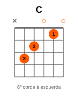
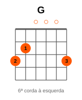
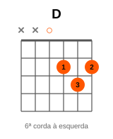
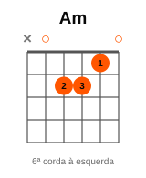
As seis linhas verticais representam as cordas. A 6ª está à esquerda; a 1ª, à direita. Os trastes vão de cima para baixo.
○Corda solta: toque sem apertar.
1 a 4Dedos da mão que monta o acorde.
O número à esquerda mostra a casa inicial quando o desenho sobe pelo braço. Confira as cordas abafadas antes de acelerar.
05
Oficina do ViolãoMapa
Por onde começar
01Acordes abertos: reconheça as formas.
02Sequências sem pestana: transforme formas em caminhos.
03Primeira pestana: amplie as combinações.
04Acordes com sétima: ouça outra cor no mesmo caminho.
05Diminuto de passagem: ligue dois lugares.
06Inversões: faça o baixo caminhar.
Você não precisa estudar tudo hoje.
06
Oficina do ViolãoParte 1
Faça os acordes conhecidos conversarem
Comece com combinações abertas, frequentes e confortáveis no violão. O objetivo é reconhecer a ordem, não colecionar desenhos.
G → D → Em → C
Leia a próxima seta enquanto o acorde atual ainda soa. Primeiro vem clareza. A velocidade aparece depois.
Mesmo uma sequência simples pode ser nova para a mão se você nunca a tocou como um ciclo.
07
Oficina do ViolãoAbertos
G → D → Em → C
Sequência 01
G → D → Em → C
Um caminho muito comum no violão popular. Quatro formas abertas deixam você concentrar a atenção na ordem e no retorno.
O que observar
- G → D: antecipe a forma menor de D.
- D → Em: deixe a mão descer para as cordas graves.
- Em → C: escute a mudança de clima.
- C → G: o último movimento também faz parte.
Pratique em 5 passos
- Monte cada forma sem ritmo.
- Toque 4 tempos por acorde.
- Reduza para 2 tempos.
- Use uma batida simples para baixo.
- Repita o ciclo sem parar.
Feche o círculo: C → G.
08
Oficina do ViolãoAbertos
C → Am → Dm → G
Sequência 02
C → Am → Dm → G
O caminho começa em C, passa por dois acordes menores e cria uma volta clara com G. Útil para ouvir como a sequência ganha direção.
O que observar
- C → Am: as duas formas compartilham a região.
- Am → Dm: observe a mudança das cordas tocadas.
- Dm → G: prepare o baixo de G.
- G → C: resolva sem interromper o pulso.
Pratique em 5 passos
- Monte cada forma sem ritmo.
- Toque 4 tempos por acorde.
- Reduza para 2 tempos.
- Use uma batida simples para baixo.
- Repita o ciclo sem parar.
Feche o círculo: G → C.
09
Oficina do ViolãoAbertos
D → A → G → D
Sequência 03
D → A → G → D
Três acordes abertos muito usados juntos. A volta já está escrita para você sentir como a frase recomeça.
O que observar
- D → A: mantenha a mão perto das cordas finas.
- A → G: prepare a ida às cordas graves.
- G → D: conclua e recomece.
Pratique em 5 passos
- Monte cada forma sem ritmo.
- Toque 4 tempos por acorde.
- Reduza para 2 tempos.
- Use uma batida simples para baixo.
- Repita o ciclo sem parar.
Feche o círculo: D → D.
10
Oficina do ViolãoAbertos
Em → C → G → D
Sequência 04
Em → C → G → D
As mesmas formas da primeira sequência surgem em outra ordem. O ouvido percebe um novo ponto de partida.
O que observar
- Em → C: comece pelas cordas que receberão dedos.
- C → G: amplie a mão sem pressa.
- G → D: antecipe a forma seguinte.
- D → Em: feche o círculo.
Pratique em 5 passos
- Monte cada forma sem ritmo.
- Toque 4 tempos por acorde.
- Reduza para 2 tempos.
- Use uma batida simples para baixo.
- Repita o ciclo sem parar.
Feche o círculo: D → Em.
11
Oficina do ViolãoLembrete da Oficina
Monte de cima para baixo
Quando for construir uma forma, organize a mão na direção da 6ª para a 1ª corda. Ignore as cordas que não devem soar.
6ª↓5ª↓4ª↓3ª↓2ª↓1ª
Este é um lembrete de organização. O foco aqui continua sendo a ordem dos acordes na música.
12
Oficina do ViolãoTreine o retorno
A última troca também conta
G → D → Em → C → G
Muita gente pratica G → D → Em → C e para. Quando a música recomeça, a passagem C → G parece uma surpresa.
FaçaTreine C → G algumas vezes e depois toque o ciclo inteiro.
EscuteO retorno precisa soar tão natural quanto as trocas do meio.
Toda sequência é um círculo. Inclua a seta que volta ao começo.
13
Oficina do ViolãoNão corra
Devagar o suficiente para continuar
Se você não consegue manter a sequência lentamente, acelerar ainda não resolve. Volte a um ritmo em que cada acorde tenha som claro.
01Monte as formas sem ritmo.
02Diga em voz alta qual acorde vem depois.
03Toque uma batida para baixo no primeiro tempo.
04Conte quatro tempos por acorde; depois tente dois.
05Só acelere quando conseguir repetir sem parar.
Clareza, antecipação e pulso vêm antes da velocidade.
14
Oficina do ViolãoExercício principal
Loop de acordes
Escolha uma sequência e toque continuamente por 1 minuto. Faça uma pausa curta; depois tente 2 minutos.
1 minutoLeia as setas, inclua o retorno e procure manter o pulso.
2 minutosObserve se a mão começa a reconhecer o próximo lugar antes da troca.
Não é teste de resistência. Se a mão tensionar ou o som piorar, pare, descanse e volte mais devagar.
O objetivo é deixar de tratar cada acorde como um evento isolado.
15
Oficina do ViolãoParte 2
A primeira pestana abre caminhos
Uma pestana pode parecer um obstáculo quando estudada sozinha. Dentro de uma sequência, ela tem uma função musical concreta.
C → G → Am → F
Comece com F. Depois acrescente Bm e, se estiver confortável, F#m. Não precisa dominar três pestanas no mesmo dia.
Se a forma ainda não soa limpa, reduza o andamento. O objetivo não é vencer a pestana à força.
16
Oficina do ViolãoPestanas
C → G → Am → F
Sequência 05
C → G → Am → F
O F completo fecha um caminho extremamente útil. Aqui a pestana surge como parte da frase, não como um exercício isolado.
O que observar
- C → G: prepare a ida às cordas graves.
- G → Am: volte à região central.
- Am → F: organize o indicador para a pestana.
- F → C: pratique a saída da pestana.
Pratique em 5 passos
- Monte cada forma sem ritmo.
- Toque 4 tempos por acorde.
- Reduza para 2 tempos.
- Use uma batida simples para baixo.
- Repita o ciclo sem parar.
Feche o círculo: F → C.
17
Oficina do ViolãoPestanas
D → A → Bm → G
Sequência 06
D → A → Bm → G
Bm amplia uma combinação familiar em D. Toque devagar para que a nova forma não interrompa a sequência.
O que observar
- D → A: mantenha o pulso.
- A → Bm: prepare a pestana antes do primeiro tempo.
- Bm → G: solte a pressão sem afastar toda a mão.
- G → D: conclua o ciclo.
Pratique em 5 passos
- Monte cada forma sem ritmo.
- Toque 4 tempos por acorde.
- Reduza para 2 tempos.
- Use uma batida simples para baixo.
- Repita o ciclo sem parar.
Feche o círculo: G → D.
18
Oficina do ViolãoPestanas
A → E → F#m → D
Sequência 07
A → E → F#m → D
F#m acrescenta outra cor a uma sequência que começa com dois acordes abertos. Faça esta página quando F e Bm já estiverem mais confortáveis.
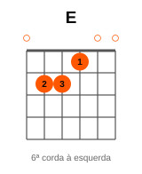
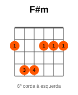
O que observar
- A → E: encontre a nova base sem pressa.
- E → F#m: a pestana entra no 2º traste.
- F#m → D: saia da pestana com leveza.
- D → A: confira o retorno.
Pratique em 5 passos
- Monte cada forma sem ritmo.
- Toque 4 tempos por acorde.
- Reduza para 2 tempos.
- Use uma batida simples para baixo.
- Repita o ciclo sem parar.
Feche o círculo: D → A.
19
Oficina do ViolãoParte 3
Os mesmos caminhos, outra cor
Acordes com sétima mudam a sonoridade sem exigir que você abandone a ideia do caminho. Primeiro ouça a diferença; depois leia os diagramas.
C → Am → Dm → G
Cmaj7 → Am7 → Dm7 → G7
Mesma direção geral. Outra sonoridade.
20
Oficina do ViolãoSétimas
Cmaj7 → Am7 → Dm7 → G7
Sequência 08
Cmaj7 → Am7 → Dm7 → G7
Esta variação colore o caminho C → Am → Dm → G. Compare as duas versões no mesmo andamento, sem transformar o exercício em teoria.
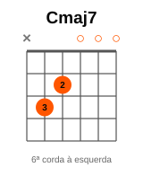
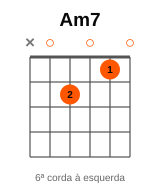
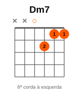
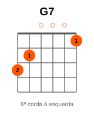
O que observar
- Cmaj7 → Am7: ouça as notas mais suaves.
- Am7 → Dm7: respeite as cordas que não soam.
- Dm7 → G7: a tensão aumenta.
- G7 → Cmaj7: escute a volta.
Pratique em 5 passos
- Monte cada forma sem ritmo.
- Toque 4 tempos por acorde.
- Reduza para 2 tempos.
- Use uma batida simples para baixo.
- Repita o ciclo sem parar.
Feche o círculo: G7 → Cmaj7.
21
Oficina do ViolãoComparação
Troque a cor, preserve o caminho
Versão simplesC → Am → Dm → G
Versão com sétimasCmaj7 → Am7 → Dm7 → G7
Toque quatro voltas de cada. O que muda no som? O caminho continua reconhecível?
01Toque a versão simples.
02Sem mudar a velocidade, toque a versão com sétimas.
03Volte à primeira versão e escolha a sonoridade que combina com a música.
O nome do acorde é útil. Mais útil ainda é ouvir onde ele leva.
22
Oficina do ViolãoParte 4
O acorde que faz a ponte
Entre C e Dm existe espaço para um acorde de passagem. C#dim cria um pequeno movimento cromático no baixo: C → C# → D.
C → C#dim → Dm
O diminuto aqui não é matéria para decorar. É uma ferramenta para criar movimento entre dois lugares.
A forma de C#dim fica mais acima no braço. Toque somente as cordas indicadas no diagrama.
23
Oficina do ViolãoPassagem
Antes e depois do diminuto
Sem passagemC → Dm → G7 → C
Com passagemC → C#dim → Dm → G7 → C
Ouça o baixo subir em pequenos passos: C, C#, D. O acorde de passagem deve ser breve; experimente 2 tempos nele e 4 nos demais.
Se não perceber a diferença, toque apenas C → C#dim → Dm repetidas vezes.
24
Oficina do ViolãoPassagem
C → C#dim → Dm → G7
Sequência 09
C → C#dim → Dm → G7
Um exemplo completo: C#dim conduz de C até Dm. G7 prepara a volta ao C. Experimente o diminuto como passagem curta.
O que observar
- C → C#dim: escute o baixo subir meio tom.
- C#dim → Dm: o baixo sobe mais meio tom.
- Dm → G7: mude o apoio da mão.
- G7 → C: deixe a sequência descansar.
Pratique em 5 passos
- Monte cada forma sem ritmo.
- Toque 4 tempos por acorde.
- Reduza para 2 tempos.
- Use uma batida simples para baixo.
- Repita o ciclo sem parar.
Feche o círculo: G7 → C. Use 2 tempos em C#dim se o desenho estiver confortável.
25
Oficina do ViolãoParte 5
Às vezes basta mudar o baixo
C/E, G/B e D/F# são acordes conhecidos com outra nota no grave. A letra depois da barra indica o baixo que deve soar primeiro.
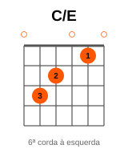
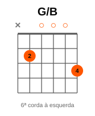
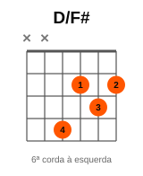
O objetivo é ouvir uma linha de baixo mais suave, com menos saltos. Não precisa decorar nomes de inversões para perceber o efeito.
C/E: baixo E. G/B: baixo B. D/F#: baixo F#. As cordas marcadas com × ficam de fora.
26
Oficina do ViolãoBaixos
C → G/B → Am → G
Sequência 10
C → G/B → Am → G
Compare com C → G → Am → G. Com G/B, o baixo faz C → B → A → G: uma descida que você consegue ouvir.
O que observar
- C → G/B: toque a 5ª corda como baixo.
- G/B → Am: o baixo desce de B para A.
- Am → G: siga até G.
- G → C: reinicie o desenho.
Pratique em 5 passos
- Monte cada forma sem ritmo.
- Toque 4 tempos por acorde.
- Reduza para 2 tempos.
- Use uma batida simples para baixo.
- Repita o ciclo sem parar.
Feche o círculo: G → C.
27
Oficina do ViolãoBaixos
G → D/F# → Em → C
Sequência 11
G → D/F# → Em → C
Compare com G → D → Em → C. O D/F# cria a descida G → F# → E no baixo antes de chegar a C.
O que observar
- G → D/F#: o baixo está na 4ª corda, 4ª casa.
- Não toque a 6ª nem a 5ª corda no D/F#.
- D/F# → Em: o baixo desce de F# para E.
- C → G: prepare a volta ao início.
Pratique em 5 passos
- Monte cada forma sem ritmo.
- Toque 4 tempos por acorde.
- Reduza para 2 tempos.
- Use uma batida simples para baixo.
- Repita o ciclo sem parar.
Feche o círculo: C → G.
28
Oficina do ViolãoOuça
O baixo conta outra história
Toque uma volta de cada e cante apenas as notas mais graves. Na segunda versão, G → F# → E forma uma pequena descida.
Se a forma D/F# exigir muito da mão, pratique só G → D/F# → Em sem batida. Depois devolva o C e o retorno.
Uma mudança pequena no baixo pode transformar a sensação de continuidade.
29
Oficina do ViolãoPrática de 10 min
Dez minutos com direção
012 min — revise as formas da sequência escolhida.
023 min — pratique a primeira metade do caminho.
033 min — toque a sequência inteira com quatro tempos por acorde.
042 min — faça o loop contínuo, incluindo o retorno.
Mantenha o mesmo caminho ao longo da sessão. Amanhã você pode repeti-lo ou escolher outro.
Registre qual seta ainda pede atenção.
30
Oficina do ViolãoPrática de 15 min
Quinze minutos com pulso
013 min — monte cada forma com calma.
024 min — faça as trocas que mais travam, inclusive a última para a primeira.
034 min — toque a sequência com pulso estável.
044 min — use uma batida simples e mantenha o ciclo.
Se o som perder clareza na última etapa, volte à contagem. Você não precisa terminar mais rápido; precisa terminar tocando melhor.
A rotina serve à música, não ao relógio.
31
Oficina do ViolãoChecklist
Antes de mudar de sequência
□ Consigo montar os acordes individualmente.
□ Sei qual vem depois de cada um.
□ Faço as trocas lentamente.
□ Treinei o retorno ao primeiro acorde.
□ Mantenho uma pulsação simples.
□ Repito o ciclo sem parar completamente.
□ A sequência começa a parecer um único movimento.
Se duas ou três respostas ainda forem ‘não’, continue nessa sequência por mais alguns dias.
32
Oficina do ViolãoEvite
Cinco erros comuns
01Aprender vinte acordes antes de combinar dois.
02Trocar de sequência antes de reconhecer o caminho.
03Tocar rápido antes de tocar limpo.
04Esquecer a troca do último acorde para o primeiro.
05Estudar formas sem relação com o repertório atual só porque parecem avançadas.
Estude o que ajuda você a tocar a próxima música com mais continuidade.
33
Oficina do ViolãoPróximo passo
Use o que você já conhece
O objetivo não é conhecer o maior número possível de acordes. É conseguir usar os que você conhece de maneira musical.
Você não toca C. Para. Depois G. Para. Depois Am. Você toca um caminho:
C → G → Am → F
A música acontece justamente entre eles.
Felipe Figueroa
Oficina do Violão
Toda semana, um próximo passo.
34
 ENTRAR NO RÉ MAIOR ↗
ENTRAR NO RÉ MAIOR ↗